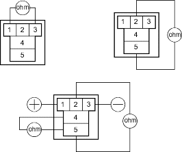

- Check whether the DTC on the shift position switch is indicated.
Is any DTC indicated?
YES - Perform the Troubleshooting Flowchart for the indicated Code(s). 
NO - Go to step 2.
- Turn the ignition switch OFF.
- Shift the shift lever to
 position while pushing the shift lock release.
position while pushing the shift lock release. - Turn the ignition switch ON (II).
- Press the brake pedal and release the accelerator pedal, shift the shift lever out of position and check that the shift lock solenoid operates.
Does the shift lever out of position?
YES - Go to step 6.
NO - Perform the Troubleshooting Flowchart for the Interlock System-Shift Lock System Circuit Troubleshooting (see page 14-66).
- Turn the ignition switch OFF.
- Remove the interlock relay and check for continuity between these terminals:
- No. 1 and No. 3
- No. 2 and No. 5
- No. 4 and No. 5 with connecting battery voltage to terminals No. 1 and No. 3 and also check for no continuity between terminals No. 2 and No. 5.
INTERLOCK RELAY

Terminal side of male terminals
Does the interlock relay operate properly?
YES - Go to step 8.
NO - Replace the interlock relay.